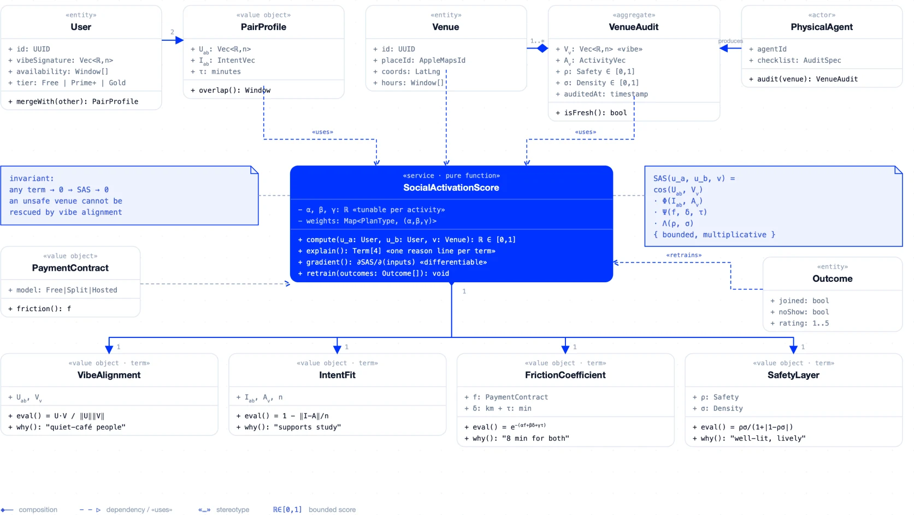
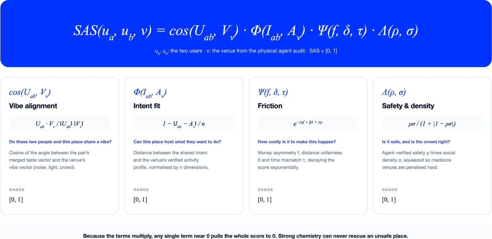
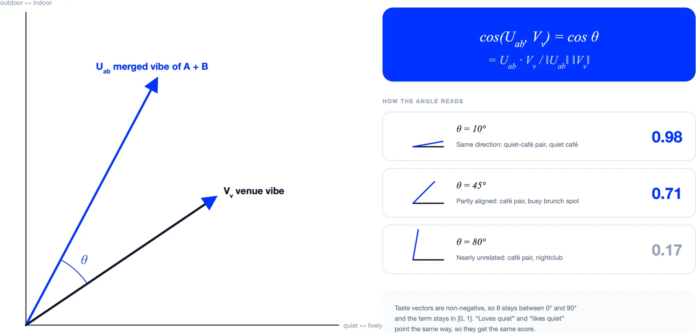
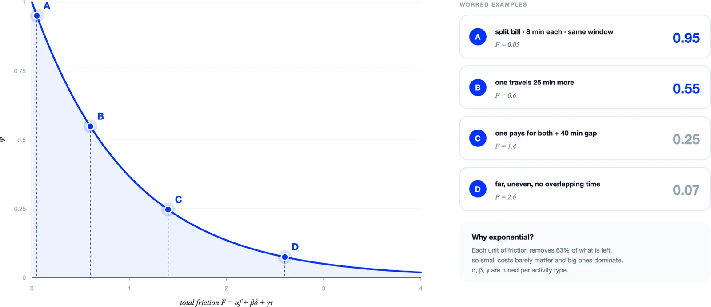
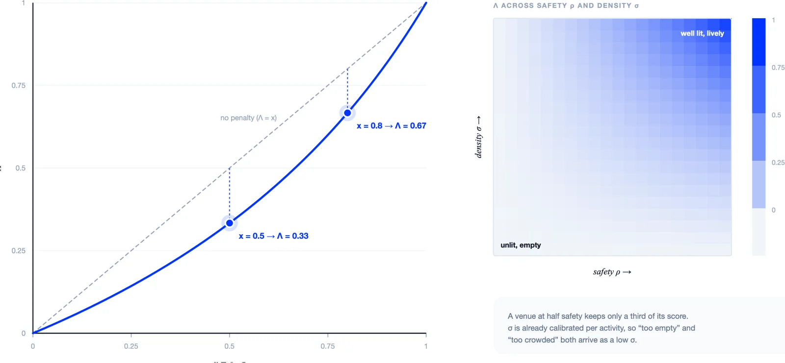
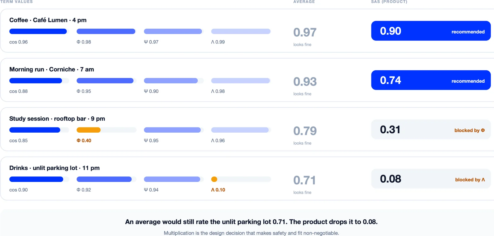
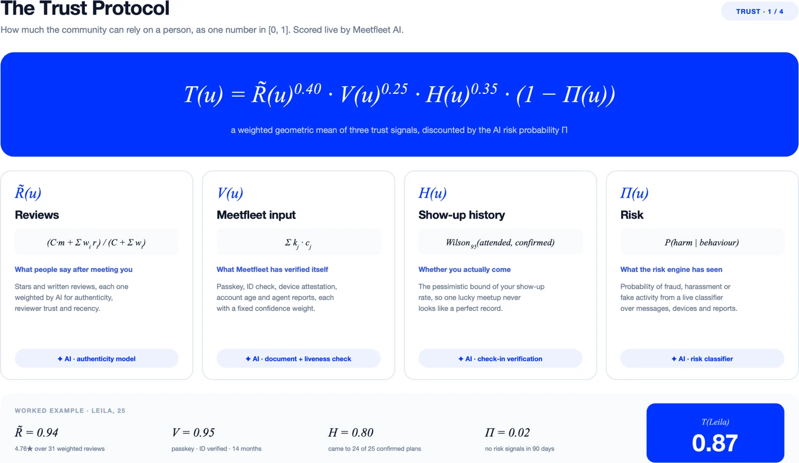
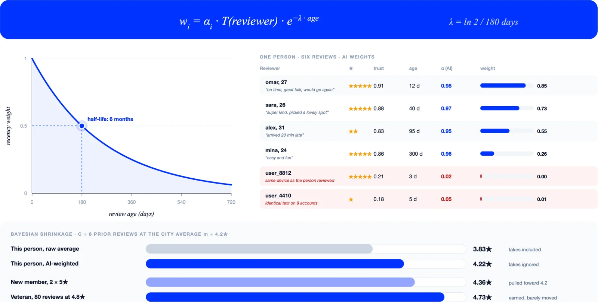
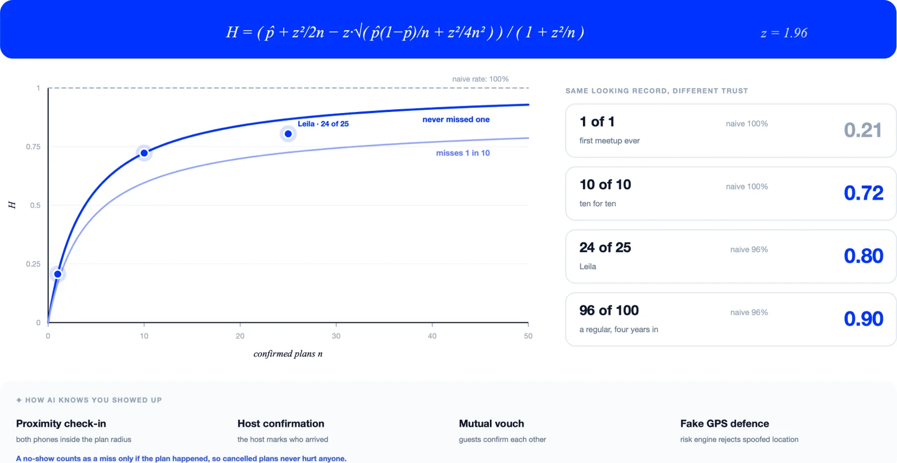
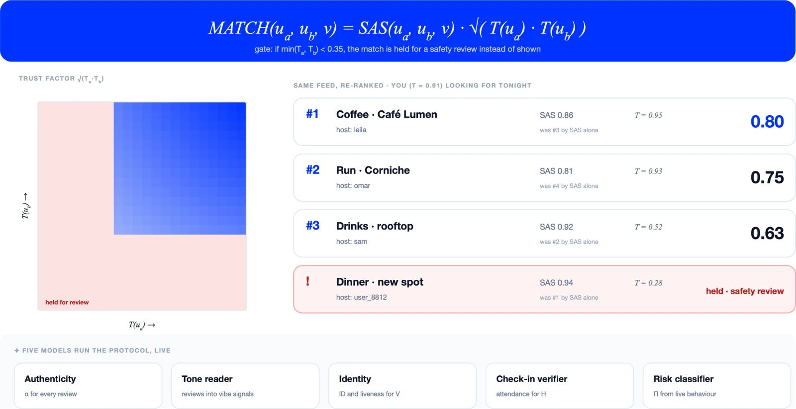

The History’s First Social OS
Meetfleet
Meetfleet is hyper-local coordination for the spontaneous era, a social OS connecting you instantly with real-time activities around you, from golf foursomes and romantic dates to group shopping, skiing, riding, and beach sessions.
- 01Phone
- 02Watch
- 03Tablet
- 04Laptop
- 05TV
- 06Headset
Part 1 · Social Activation Score
The score and the model
SAS gives Meetfleet a number it can defend; a language model gives that number a voice. The model never scores anything itself: it calls SAS as a tool, reads the four terms, and turns the dominant one into a plain sentence on the card (“0.91: you both love quiet cafés, 8 minutes for each of you”). The same model powers the plan bar: type “sunset walk with 2 friends tomorrow, somewhere by the sea” and it drafts the plan, searches real venues through Apple Maps, has each one scored by SAS, asks one question if it is unsure, and opens Create Plan pre-filled with the uncertain fields highlighted. It also writes the moment card from weather, time and habits, decides when the radar island is worth an interruption (only above a SAS threshold), and condenses notifications into one daily line. Guardrails are structural: schema-checked output, venues that must exist, only approximate location ever leaves the phone, and the person always taps Post.
The math picks, the model explains, the person decides.

The Social Activation Score formula
The full SAS formula combines four factors into a single score: vibe alignment, intent fit, friction, and safety/density. Each factor is a dimension of the meetup, and the product structure means that a weak factor cannot be masked by strong ones. This is what makes the score defendable: it does not average away a low-safety venue or a poor intent fit.

Reading the formula directly, the score is the product of four terms: the cosine similarity between the merged vibe of people A and B and the venue vibe, the intent fit between the plan and the people involved, the exponential friction decay that reduces feasibility as travel, time, cost, and other logistical penalties grow, and the safety/density factor that balances safety and crowd comfort. The formula is not a weighted average, so a near-zero factor in any one dimension will lower the overall score even if the other factors are high.
Cosine similarity for vibe alignment
The cosine similarity diagram shows how the merged vibe vector of people A and B aligns with the venue vibe vector. Cosine similarity measures the cosine of the angle between two vectors, which makes it a natural way to compare direction rather than magnitude. In this context, the angle captures how well the activity, atmosphere, and preferences of the people involved match the character of the venue.

To read the diagram, look for the plotted examples near 10, 45, and 80 degrees. A smaller angle means stronger alignment: when the merged vibe of people A and B points in nearly the same direction as the venue vibe, the cosine is closer to 1 and the alignment is stronger. This factor matters because Meetfleet is not just matching people to plans; it is matching people and plans to places. A venue that feels out of character for the activity or the group will lower the score, even if the people themselves are a good match.
Exponential friction decay
The friction diagram shows how the friction multiplier declines as travel, time, cost, and other logistical penalties increase. Its exponential form, e to the power of minus total friction, means that every additional unit of friction leaves about 37% of the multiplier that remained before it. The curve falls steeply at first and then approaches zero. In this model, added inconvenience therefore reduces a plan’s feasibility even when the people and venue are a good match.

The worked examples and curve explain declining feasibility directly. As the friction multiplier moves from near 1 toward 0, the score drops. This factor matters because Meetfleet is designed for spontaneous coordination: plans that are easy to join, start soon, and require little overhead are more likely to activate. By penalizing friction explicitly, the score favors plans that are realistic for the people involved and the time they have available.
Safety squared and crowd-density factor
The safety diagram shows how safety is squared to penalize low-safety venues, then combined with a crowd-density factor. The heatmap illustrates the joint effect of both dimensions. Safety is not the same as crowding: a safe venue can be crowded, and a low-safety venue can be empty. The squared safety term ensures that low-safety conditions lower the score sharply, while the crowd-density factor favors a comfortable level of activity rather than simply penalizing all crowding.

To read the diagram, distinguish the safety penalty from the crowd-density factor. A penalty relative to safety reflects how much the venue conditions reduce the score, while the crowd-density factor captures whether the meetup feels comfortable or overwhelming. This factor matters because Meetfleet needs to balance safety, comfort, and feasibility. A plan that is safe but uncomfortable may still score lower than a plan that is both safe and well paced, and a plan that is unsafe will score lower even if it is convenient or well matched on other dimensions.
Why the product matters
The final diagram compares the SAS product with an average for four plans. The key insight is that an average can conceal a weak factor: if one dimension is nearly zero, the average can still look reasonable if the other dimensions are high. The product, by contrast, keeps the weakest factor visible. This is why the SAS score is more informative than a simple average: it prevents good chemistry from offsetting poor intent fit or unsafe conditions.

Reading the diagram directly, the four plans show why the product structure is useful. A plan with weak intent fit or low safety will score lower under the product formula than under an average, even if the other factors are strong. This matters to Meetfleet because the score is used to rank plans, explain matches, and surface safer options. By preserving the weakest factor, the product formula gives Meetfleet a more reliable signal about which plans are likely to activate and which may need more information before they feel realistic.
Part 2 · Trust
The Trust Protocol
The illustrated Trust Protocol combines reviews, Meetfleet input and show-up history into a trust value T(u) between 0 and 1, then discounts that value by risk probability. It uses a weighted geometric mean: reviews are raised to the power 0.40, Meetfleet input to 0.25, and attendance reliability to 0.35. These are exponents, not additive shares of a score. Multiplying the result by (1 − Π) reduces trust as estimated risk increases, while the geometric combination keeps weak evidence from being entirely hidden by strong signals elsewhere.

To read the diagram, look for the weighted geometric combination of the input terms and the discount applied by the risk probability. The Leila example in the diagram shows reviews at 0.94, Meetfleet input at 0.95, show-up history at 0.80, and risk probability at 0.02. The resulting trust score of 0.87 reflects a strong overall signal tempered by the risk discount. This structure matters because it prevents a single strong dimension from masking a weak one: a participant with excellent reviews but a poor show-up history, for example, will still produce a lower trust score than one with consistent evidence across all dimensions.
Reviews, weighted by AI
Review weights depend on estimated authenticity, trust in the reviewer and exponential recency decay. The curve shows weight falling with review age: after six months, the recency component retains half its starting weight. Newer reviews therefore count more than otherwise comparable older reviews. Separately, Bayesian shrinkage pulls scores based on little evidence toward a city average of 4.2 stars. The table and comparison bars show why both evidence quality and sample size matter, rather than treating every star rating as equally informative.

To read the diagram, look for the weight curve, the prior, and the way the model treats recent versus established evidence. The diagram does not imply that AI judgments guarantee authenticity or bias-free results; it shows how the model weights evidence before it is used in the trust calculation. This matters because Meetfleet needs to balance responsiveness to new feedback with skepticism toward thin or potentially manipulated evidence. By weighting reviews in this way, the model can produce a more stable trust signal that reflects both the quality of the evidence and the uncertainty around it.
Show-up history: the honest bound
Show-up history uses a Wilson lower confidence bound with z=1.96 to measure conservative attendance reliability rather than raw success rate alone. The diagram illustrates how sample-size uncertainty affects the bound: one appearance is not treated as a perfect record, and larger samples produce tighter bounds. The examples in the diagram show how the bound changes from 0.21 for 1/1, to 0.72 for 10/10, to 0.80 for 24/25, and to 0.90 for 96/100. Verified evidence is represented by proximity check-in, host confirmation, and mutual vouch, but the diagram does not imply that fake GPS defense is a guarantee of perfect security.

To read the diagram, look for the relationship between sample size and the confidence bound. A small sample may produce a high raw success rate, but the bound will be wider because there is less evidence. A larger sample produces a tighter bound, giving Meetfleet a more reliable estimate of attendance reliability. This matters because Meetfleet needs to distinguish between plans that are likely to activate and plans that may be overconfident due to thin evidence. By using a conservative bound, the model can avoid treating early success as a perfect record and instead reflect the uncertainty that remains until more evidence is collected.
Trust meets SAS
SAS measures plan fit, while trust measures participant reliability. The MATCH formula multiplies SAS by the square root of the product of the two participants’ trust scores: SAS × √(T(A) × T(B)). The heatmap shows this joint trust factor, and the ranked examples show how it changes the order of otherwise appealing plans. A separate gate holds a case for review when the lower trust score is below 0.35. That gate is a review threshold, not proof that a person is unsafe.

To read the diagram, look for the heatmap, the ranked examples, and the distinction between fit and trust. The review gate is not a proof that someone is unsafe; it is a threshold that requires review when trust is low. This matters because Meetfleet needs to balance the appeal of a plan with the reliability of the people involved. By separating fit from trust and applying a review gate, the model can produce a more nuanced ranking that reflects both the quality of the match and the confidence that the participants will show up as expected. The diagram shows how this works in practice, using the illustrated protocol to explain how trust and fit are combined into a final ranking signal.
Conclusion: the invention is the decision system
We are not calling familiar mathematics an invention. Cosine similarity, exponential decay, Bayesian weighting and the Wilson bound already exist. Our inventive contribution is how we bring them together around a different question: not “what will keep someone scrolling?”, but “which meeting fits these people, is feasible, and has enough evidence of reliability to recommend?” SAS separates vibe, intent, friction and venue conditions; the Trust Protocol separately evaluates participant reliability. The match calculation joins the two, while a low-trust case goes to review rather than being disguised by a strong fit score.
That is what makes our invention concrete: an explicit decision architecture, not an AI label attached to a feed. Its inputs are defined, its calculations can be inspected, and its recommendations can be traced back to the factors that shaped them. A language model gives those decisions a voice and helps draft the plan; it does not replace the scoring rules or the person’s final choice. We have designed the mechanism. Its calibration and real-world benefits still need to be tested, but the contribution is already specific: a system built to turn compatible intent into a feasible meeting, without letting fit conceal weak reliability.